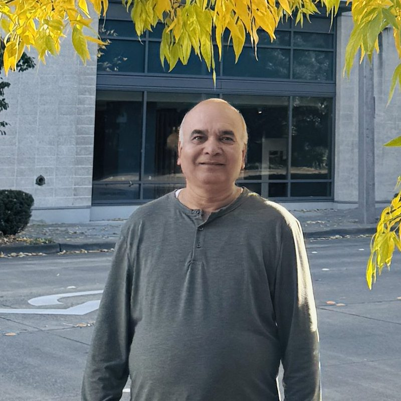
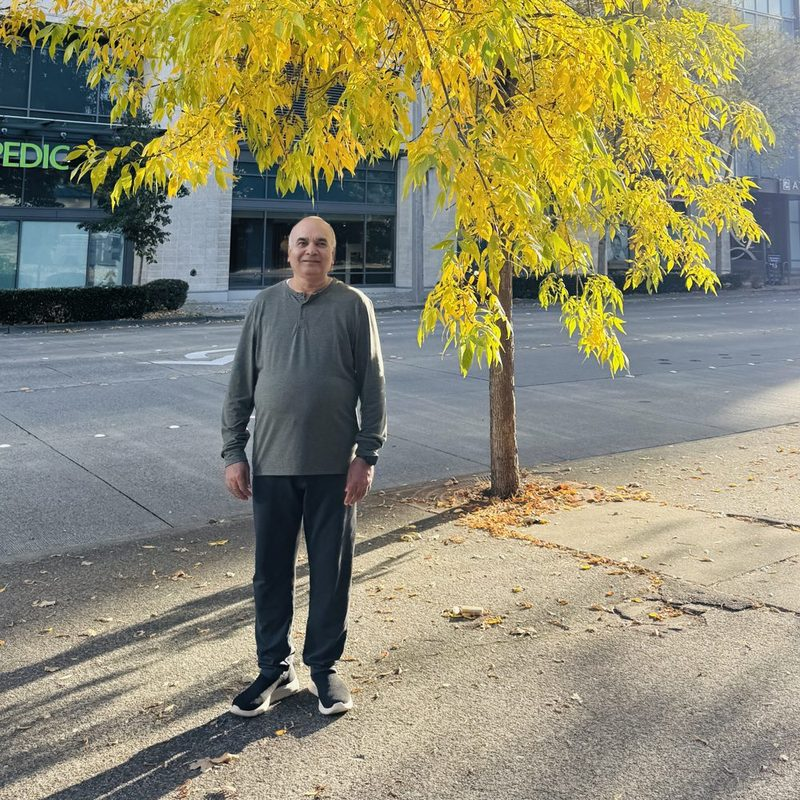
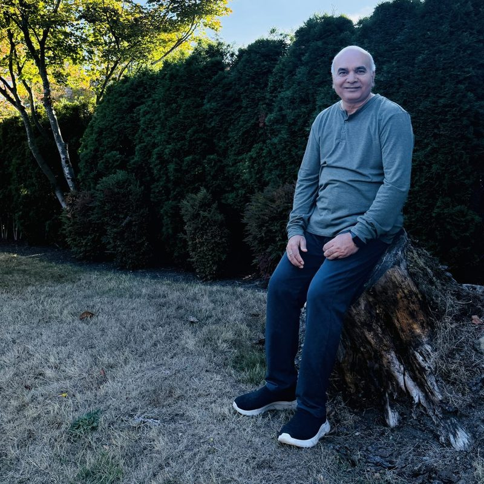
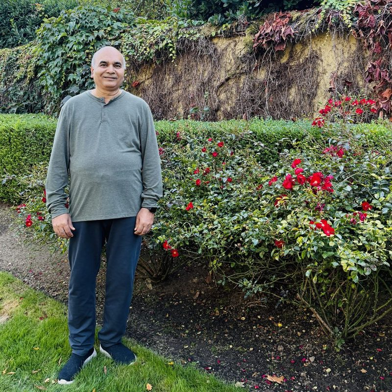

Genetic studies on yield and its components in Indian mustard (Brassica juncea L. Czern & Coss)
Munesh Chand Tyagi. Registered 2007, thesis submitted 2012, viva-voce December 2013.
Retired Professor, Department of Genetics & Plant Breeding
Janta Vedic College, Baraut (Ch. Charan Singh University, Meerut)
Four decades of teaching and field research on the crops of western Uttar Pradesh: chickpea, lentil, mustard, wheat and cowpea.

Dr. Vipin Kumar Dwivedi joined the Department of Genetics and Plant Breeding (formerly Agricultural Botany) at Janta Vedic College, Baraut, in December 1985. He taught undergraduate and postgraduate students in agriculture there until his retirement, and guided M.Sc. (Ag.) and Ph.D. research in crop improvement.
His research asks a practical question: which plants in a breeding population carry the traits that will give farmers a better, more reliable harvest? To answer it he has measured genetic variability, heritability and trait association in field trials, tested how stable varieties are across seasons and sowing dates, used induced mutation to widen the variation available to breeders, and studied how crops cope with the rainfed, moisture-limited conditions of the region.
From 2009 to 2012 he served as a Programme Officer of the National Service Scheme (NSS) at the college, leading its student volunteers in community service alongside his teaching and research.
He has published with collaborators from the Indian Agricultural Research Institute, New Delhi, the ICAR-Indian Institute of Pulses Research, Kanpur, and Banaras Hindu University, Varanasi. He remains active in research after retirement.
Dr. Dwivedi has supervised doctoral research in Agricultural Botany (Genetics & Plant Breeding) for Chaudhary Charan Singh University, Meerut, with the research carried out at Janta Vedic College, Baraut. The theses below appear in the university's published records of awarded degrees.
Munesh Chand Tyagi. Registered 2007, thesis submitted 2012, viva-voce December 2013.
Devendra Malik. Registered 2002, co-supervised with Dr. H. B. Chaudhary, New Delhi (external). Viva-voce February 2014.
Many of his students appear as first authors on the papers listed below, among them Devmani Bind (cowpea and mustard), Mukesh Kumar (chickpea), Princee Singh (lentil) and Ajeet Singh (wheat).
Selected journal articles. Titles link to the published paper.
Princee Singh, V. K. Dwivedi, Jitender Kumar, Rajesh Kumar Gupta. Periodic Research 15(3).
Princee Singh, V. K. Dwivedi, Jitender Kumar. Remarking An Analisation 10(10).
Ajeet Singh, Sachin Kumar, Vipin Kumar Dwivedi, Shubham Mishra, Ajeet Kumar. International Journal of Current Microbiology and Applied Sciences 13(11): 170–174.
Ajeet Singh, Sachin Kumar, Vipin Kumar Dwivedi, Shubham Mishra, Ajeet Kumar. International Journal of Current Microbiology and Applied Sciences 13(11): 166–169.
Vipin Kumar Malik, Shiv Kumar Singh, Vijay Kumar, Norang Pal Singh, Ankit Malik, Vipin Kumar Dwivedi. International Journal of Agricultural Invention 3(1): 11–15.
Mukesh Kumar, Sitaram Kushwaha, V. K. Dwivedi, S. S. Dhaka. International Journal of Advanced Engineering Research and Science 3(9): 150–156.
R. K. Gupta, V. K. Dwivedi. International Journal of Agricultural Invention 1(1): 30–34.
Devmani Bind, V. K. Dwivedi, S. K. Singh. International Journal of Advanced Research 4(2): 49–53.
Devmani Bind, Sanjay Kumar Singh, V. K. Dwivedi. Indian Journal of Agricultural Research 49(6).
Devmani Bind, V. K. Dwivedi. Indian Journal of Agricultural Research 48(5): 398–401.
Devmani Bind, Dhirendra Singh, V. K. Dwivedi. Agricultural Science Digest 34(3): 183.
Aqeel Hasan Rizvi, Vipin Kumar Dwivedi, Raj Kumar Sairam, Shyam Singh Yadav, Chellapilla Bharadwaj, Ashutosh Sarker, Afroz Alam. International Journal of Scientific Research in Agricultural Sciences.
D. K. Yadava, Swarup K. Parida, V. K. Dwivedi, A. Varshney, Irfan A. Ghazi, V. Sujata, T. Mohapatra. Journal of Plant Biochemistry and Biotechnology.
D. K. Yadava, Naveen Singh, Sujata Vasudev, Rajendra Singh, Sanjay Singh, S. C. Giri, V. K. Dwivedi, K. V. Prabhu. Indian Journal of Agricultural Sciences 82(7): 563–567.
Also listed on Semantic Scholar.



The Department of Genetics and Plant Breeding at Janta Vedic College, Baraut (Baghpat, Uttar Pradesh) is one of the older agricultural botany departments in the country. Its M.Sc. (Ag.) programme began in 1959, and the college is affiliated to Chaudhary Charan Singh University, Meerut.
The department offers B.Sc. (Ag.), M.Sc. (Ag.) and Ph.D. programmes. Around 900 students have completed postgraduate degrees there and about 90 scholars have earned their doctorates.